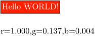

Contents
An example of how to use LMTX to calculate RGB values is the following:
-
% Use a color picker to get red, green and blue values of a color: % Example: RAL 2005: red = 255, green = 35, blue = 1 % Create variables from the values: \setvariables[ColorName][r=255,g=35,b=1] % Do some magic: \usemodule[mathfun] % Define the actual color based on variables: \definecolor[ColorName][% r={\mathexpr[.3N]{\getvariable{ColorName}{r}/255}}, g={\mathexpr[.3N]{\getvariable{ColorName}{g}/255}}, b={\mathexpr[.3N]{\getvariable{ColorName}{b}/255}}, ]% % Test it: \framed [foregroundcolor=white, background=color, backgroundcolor=ColorName]{Hello WORLD!} \blank[line] \colorcomponents{ColorName}
- 